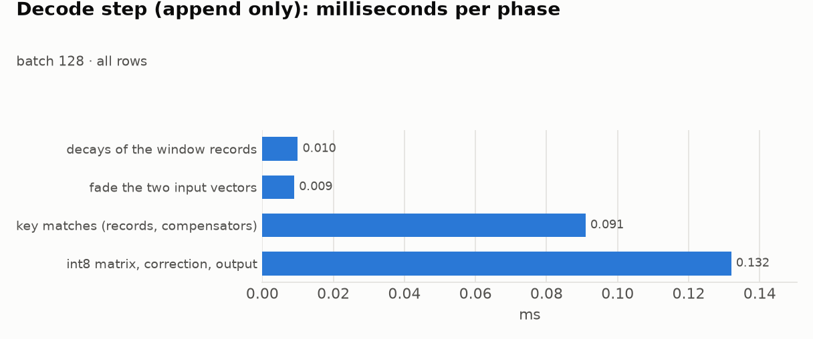
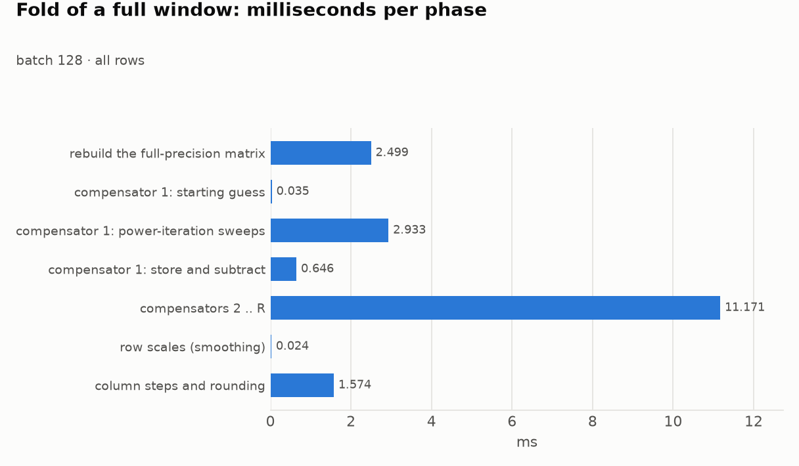
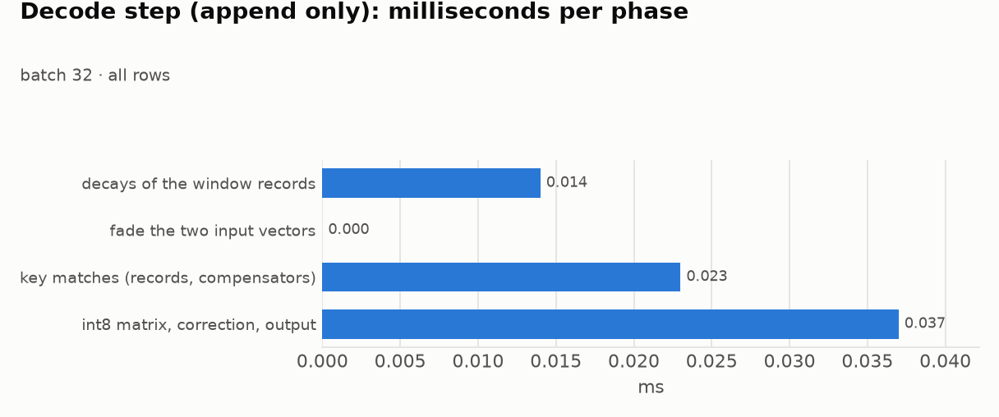
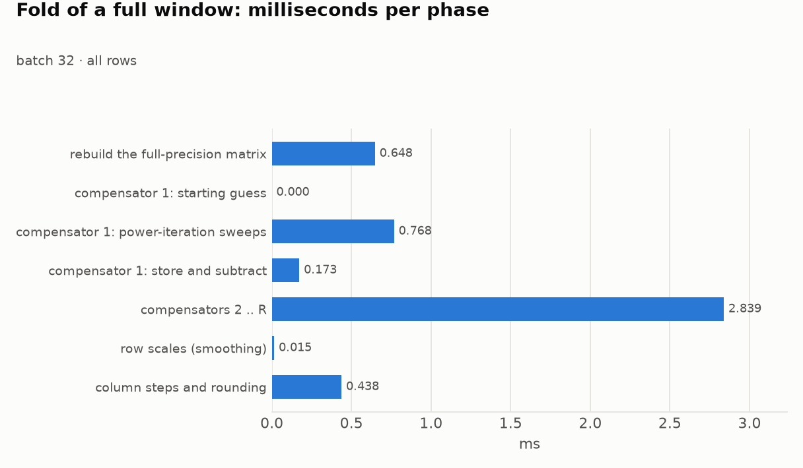
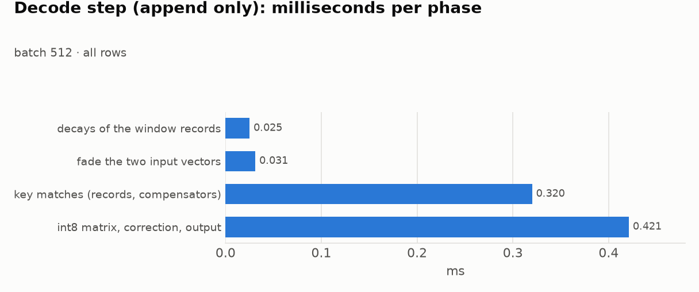

Where the kernel's time goes
The kernel is stopped at named points of its work; a phase's time is the difference between two stops. Medians of 30 calls, state restored before every call.
Batch 128, 8 sweeps v2-clean

| Phase | ms | Share | Cumulative ms | 10% .. 90% of calls |
|---|---|---|---|---|
| decays of the window records | 0.010 | 4.1% | 0.010 | 0.010 .. 0.010 |
| fade the two input vectors | 0.009 | 3.7% | 0.019 | 0.019 .. 0.019 |
| key matches (records, compensators) | 0.091 | 37.4% | 0.111 | 0.110 .. 0.113 |
| int8 matrix, correction, output | 0.132 | 54.3% | 0.243 | 0.241 .. 0.246 |

| Phase | ms | Share | Cumulative ms | 10% .. 90% of calls |
|---|---|---|---|---|
| rebuild the full-precision matrix | 2.499 | 13.2% | 2.499 | 2.495 .. 2.502 |
| compensator 1: starting guess | 0.035 | 0.2% | 2.533 | 2.530 .. 2.537 |
| compensator 1: power-iteration sweeps | 2.933 | 15.5% | 5.466 | 5.462 .. 5.473 |
| compensator 1: store and subtract | 0.646 | 3.4% | 6.112 | 6.102 .. 6.127 |
| compensators 2 .. R | 11.171 | 59.2% | 17.283 | 17.229 .. 17.320 |
| row scales (smoothing) | 0.024 | 0.1% | 17.307 | 17.277 .. 17.352 |
| column steps and rounding | 1.574 | 8.3% | 18.881 | 18.840 .. 18.929 |
Per decode step, averaged over a window: 1.454 ms.
Batch 32, 8 sweeps v2-clean

| Phase | ms | Share | Cumulative ms | 10% .. 90% of calls |
|---|---|---|---|---|
| decays of the window records | 0.014 | 20.0% | 0.014 | 0.013 .. 0.023 |
| fade the two input vectors | -0.005 | -7.1% | 0.009 | 0.008 .. 0.019 |
| key matches (records, compensators) | 0.023 | 32.9% | 0.032 | 0.031 .. 0.037 |
| int8 matrix, correction, output | 0.037 | 52.9% | 0.070 | 0.068 .. 0.074 |

| Phase | ms | Share | Cumulative ms | 10% .. 90% of calls |
|---|---|---|---|---|
| rebuild the full-precision matrix | 0.648 | 13.3% | 0.648 | 0.641 .. 0.656 |
| compensator 1: starting guess | -0.004 | -0.1% | 0.644 | 0.640 .. 0.648 |
| compensator 1: power-iteration sweeps | 0.768 | 15.7% | 1.412 | 1.407 .. 1.420 |
| compensator 1: store and subtract | 0.173 | 3.5% | 1.585 | 1.579 .. 1.593 |
| compensators 2 .. R | 2.839 | 58.2% | 4.424 | 4.412 .. 4.442 |
| row scales (smoothing) | 0.015 | 0.3% | 4.439 | 4.431 .. 4.453 |
| column steps and rounding | 0.438 | 9.0% | 4.877 | 4.860 .. 4.904 |
Per decode step, averaged over a window: 0.402 ms.
Batch 512, 8 sweeps v2-clean

| Phase | ms | Share | Cumulative ms | 10% .. 90% of calls |
|---|---|---|---|---|
| decays of the window records | 0.025 | 3.1% | 0.025 | 0.025 .. 0.026 |
| fade the two input vectors | 0.031 | 3.9% | 0.057 | 0.057 .. 0.057 |
| key matches (records, compensators) | 0.320 | 40.1% | 0.377 | 0.376 .. 0.379 |
| int8 matrix, correction, output | 0.421 | 52.8% | 0.798 | 0.797 .. 0.801 |
| Phase | ms | Share | Cumulative ms | 10% .. 90% of calls |
|---|---|---|---|---|
| rebuild the full-precision matrix | 9.761 | 13.3% | 9.761 | 9.755 .. 9.765 |
| compensator 1: starting guess | 0.145 | 0.2% | 9.906 | 9.902 .. 9.908 |
| compensator 1: power-iteration sweeps | 11.267 | 15.3% | 21.172 | 21.166 .. 21.180 |
| compensator 1: store and subtract | 2.422 | 3.3% | 23.595 | 23.588 .. 23.601 |
| compensators 2 .. R | 43.812 | 59.7% | 67.407 | 67.358 .. 67.453 |
| row scales (smoothing) | 0.087 | 0.1% | 67.494 | 67.452 .. 67.516 |
| column steps and rounding | 5.937 | 8.1% | 73.432 | 73.378 .. 73.488 |
Per decode step, averaged over a window: 5.441 ms.
Source: profile_*.txt. A difference smaller than the 10% .. 90% spread is not a finding.
Generated 2026-11-13 09:16 from results/run-creative-franklin by reports/generate_reports.py. All reports.